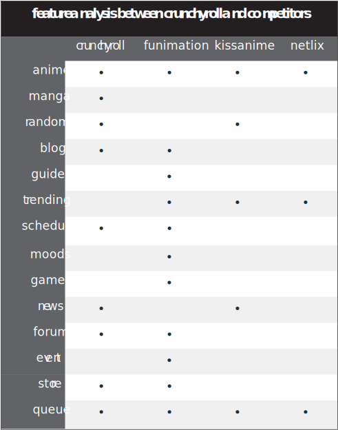
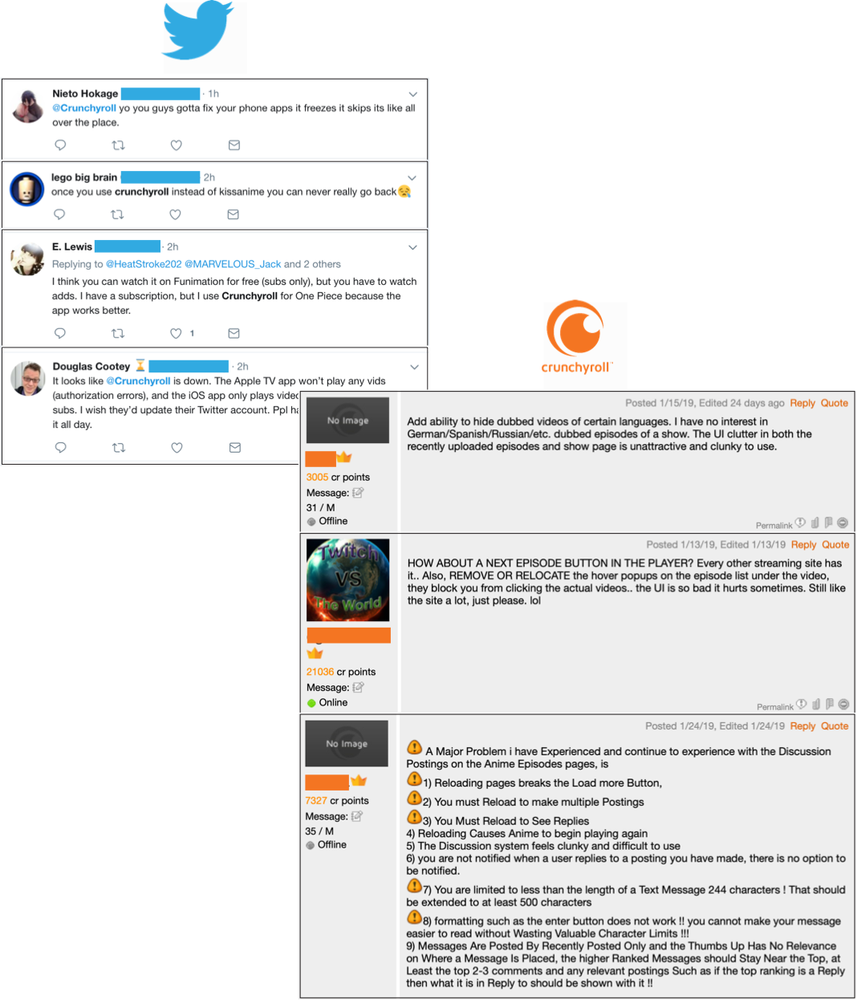
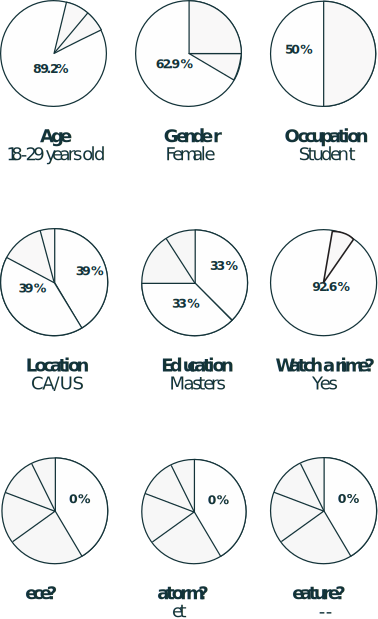

my role user research, user surveys, wireframing, prototyping, and visual design
duration Spring 2016 (initial) March-May 2019 (revised)
tools paper, sketch, invision studio
links visit prototype
abstract
How can crunchyroll be redesigned to better serve its audience?
In order to improve the pre- and post-watching experience, I have targeted areas within the crunchyroll experience that could be improved upon in flow, interaction, and appearance.
Crunchyroll can currently be considered one of the leading distributors of licensed anime globally. Since starting as a video upload and streaming site back in 2006, it has expanded into licensed distribution of anime, digital distribution of manga, apps for mobile and gaming devices, events, anime production, and through Otter Media, is now under Warner Bros.
research
A usability evaluation reveals multiple areas for improvement.
usability
Requires a lot of scrolling to reach the top of home page; navigation doesn't travel with scroll nor is there a back to top button
Content is tightly packed on the page
Related content is not in close proximity to each other
Advertisements sometimes don't have clear CTAs and end up looking like an extension of the background
accessibility
Needs more text alterntaives to non-text content (e.g. images, videos)
Not fully keyboard accessible
Headings and labels use similar sizing
Repetitive naming of text links
Instances of very low color contrast
Does not have a site map
functionality
There are broken and misnmaed links
Site crashes freqently on web, mobile, and other platforms
presentation
Branding, layout, and text styling is fairly consist4ent on all pages exept: forums, store, premium, log in, random, individual videos, search results, platforms and devices, and about.
research
A high visitor count butts heads with a poor bounce rate; Home and search are the most visited pages.
The United States makes up 42.3% of traffic on crunchyroll and is the main country of focus in this redesign. Traffic usually comes directly from the site at 65.59% with search second at 22.23%.
competitive analysis
Many channels exist to stream anime; so, why choose crunchyroll over them? What's unique?
Users seek out websites that provide some convenience in watching anime. How that is perceived varies from:
being able to download episodes,
to watch episodes for free but with advertisements,
or to watch episodes without advertisements but for a fee
To help users decide whether paying for membership is worth it, they often consider what othjer features is provided by the service. The table to the right gives an overview of features offered by CR and competitors.

user generated feedback
CR users regularly post on the internal forums and on social media about their issues with the platform
Using Twitter's search, I found that CR is being tweeted about practically around the clock due to its global reach, with CR accounts dedicated to different countries and regions of the world. Here I show users discussing issues with functionality.
On the bottom right are excerpts of a CR forum thread about potential UI improvements its users want to see. Each user in this thread expresses frustration and also suggestions on what exactly they'd like to see added or improved.

user surveys
85% of survey takers watch anime on Netflix, 64% use crunchyroll, and 48% use Kissanime, a site for pirated content.
To better understand how people watch anime and what they expect from those websites in regards to features, I conducted a survey through google forms to learn more.
The survey is still open, but as of April 25th, respondents were mainly millennials, female, students, living in the United States, and have received a graduate education. A majority do watch anime and use sites that weren't all expected; of those sites written in, collectively they made up 18% of preffered viewing.

target audience
CR users are divided among Premium and Normal members; this redesign focuses on those who use CR regularly.
Why watch CR as a Premium member?
To watch episodes without advertisements
To watch anime ahead of others
To get discounts to events and merchandise
To help the platform because of its mission
All of the Normal member benefits included
Why watch CR as a Normal member?
Visual appeal is better than most of its competitors
Ability to interact with the community
More anime, manga, anime news, events, etc., offered than competitors
Accessible across many devices and languages
persona one
Meet Snow, a 26-year-old who has been a Premium member for 5 years.
pain point
There aren't many ways to rearrange my queue so I can make it more useful to me. I go to an external site, MyAnimeList.net, to create lists of shows that I'm into.
motivations
Joined CR for its quality videos and frequent new releases
Checks CR regularly for new anime, posting/commenting occasionally on videos and interesting forum posts
bio
Male
Bachelor Degree
Comfortable with web, mobile, tablets, and tvs
"I've decided to give some suggestions for possible features & changes that as a user I feel would mae the site nicer/easier to use. Feel free to add your own suggestios or give fair critique.
user journey
Snow maps out the steps he would need to take in order to organize his queue.
user task
Snow searches for, adds, and organizes shows in his queue.
user tak steps
Snow searches for, adds, and organizes shows in his queue.
persona
Meet Bunny, an 18-year-old who has been a Normal member for 2 years.
pain point
I would like to interact on the forums from mobile more often but the site not being responsive is a hassle; I respond on obile only when there's time. Otherwise, I chat from my laptop.
motivations
Joined CR for its content and community
Regularly receives new achievements for engaging in the forum and other site wide activities
Share self-written crime drama blog with CR community
bio
Female
High school, some college
Comfortable with web, mobile, tablets, and tvs
"[The forums are] always fun to come around and see what's been dropped seasonal wise, even off season, including whawt's new in the forums. and thanks to the recent purchae of a fire stick I no longer have to sit online to watch CR I can watch it on TV."
user journey
Bunny maps out steps she'd need to take in order to chat about an anime with CR users.
user task
Bunny discusses anime with others on a video and in the forum.
user task steps
Bunny discusses anime with others on a video and in the forum.